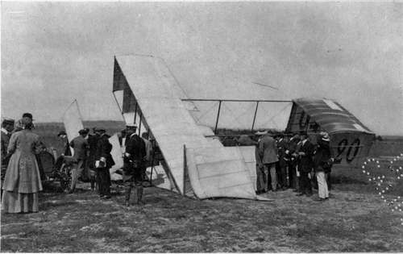
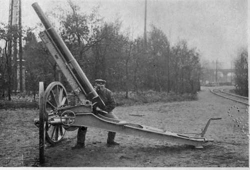
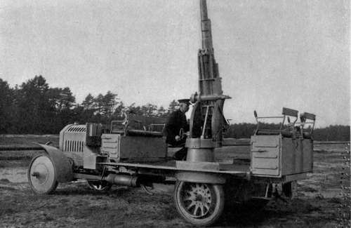
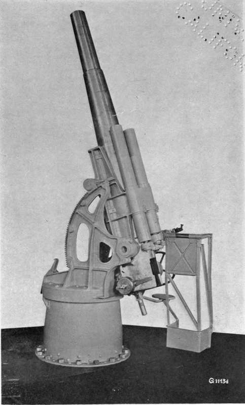

The Flying Machine In War. Part 3
Description
This section is from the book "The New Art Of Flying", by Waldemar Kaempffert. Also available from Amazon: The New Art of Flying.
The Flying Machine In War. Part 3
Is the enemy altogether defenceless? Can he offer no resistance? It is inconceivable that he shall lie at the mercy of a great artificial vulture, as helpless as a carcass. Undoubtedly he will have his special artillery, — field pieces so constructed that they can be elevated for high angle fire. Against that military bird of prey which he sees hovering far above him and whose errand he divines only too well, he will train this weapon. If his whistling shrapnel should strike a motor, a propeller blade, or an ignition device, if it should cut a tiller rope or splinter a steering rod, that great bird above him must glide down, wounded at least. It is not necessary to kill the pilot, but merely to strike a vital part of the driving mechanism.
Fig. 72. An old style Voisin biplane of cellular construction wrecked because the pilot tried to make too short a turn near the ground.
Photograph by Edwin Levick.
The spy in the air may glide down in safety; but his information is lost to his commanding officer. The question arises, can the aeroplane be struck so easily? Probably not. A moving object is always difficult to hit, but trebly so when it soars half a mile up in the sky.
Such guns are made in Germany by Krupp and by the Rheinische Metallwaaren und Ma-schinenfabrik, of Düsseldorf. The guns have small bores and use light projectiles, so that they can be fired quickly. The barrels are comparatively long, so that a high initial velocity and a low trajectory are obtained. Telescope sights and a range finder are provided, the latter fitted with an arrangement which gives the necessary elevation as the distance is read off.
The ordinary Krupp field gun has a 6.5 cm. bore (Fig. 73), and is fitted with an hydraulic brake and a spring recoil. A coiled spring is provided to balance the gun as it is pointed above the horizontal. The upper part of the gun-carriage is movable, and the wheels can also be given a half-turn away from the body, which assists in quick aiming. This equipment weighs 875 kilos, 352 kilos of this being in the gun, 523 kilos in the carriage. The projectile weighs 4 kilos — about 81 lbs. 13 oz. The initial velocity is given as 620 m. — roughly 2,034 ft. a second; the extreme range, 8,650 m. — 9,450 yards; and the height of fire obtainable, 5,700 m. — roughly 18,700 ft. The gun can be elevated through an angle of 70 degrees above the horizontal, and depressed 5 degrees below it, and it can be revolved right round through an angle of 360 degrees.
Fig. 73. A Krupp 6.5 cm. gun for airship and aeroplane attack. The gun fires a projectile weighing about 8 lbs. 13 oz. to a height of about 18,700 feet.
A heavier type of Krupp field gun (Fig. 74) has a bore of 7.5 cm., and weighs when ready for firing 1,065 kilos. The weight of the projectile is 5.5 kilos — about 12 lbs. 2 oz. The initial velocity is stated to be 625 m. per second, and 9,100 m. and 6,300 m. are given as the extreme range and height attained at trials. The motor-car on which the weapon is carried is designed for an average speed of 45 kilometres— 28 1/2 miles an hour, and weighs 3,250 kilos — 7,163 lbs. — without the gun. It carries 62 projectiles under the seats, and is propelled by a 50 horse-power motor. It is steadied during firing by a special arrangement which presses the platform against the axles. The gun can be elevated to an angle of 75 degrees from the horizontal, and can be revolved through a complete circle.
Fig. 74. A Krupp 7.5 cm. gun mounted on an automobile truck. The gun fires a 12 lb. 2 oz. projectile to a height of about 4 miles. The automobile has a speed of 28 1/2 miles an hour. Under its seats 62 projectiles can be stored.
A 10.5 cm. naval gun (Fig. 75) is also made by Krupps. It weighs 3,000 kilos when ready for firing, the projectile 18 kilos, the gun 1,400, the carriage 1,600. Its initial velocity is 700 m. per second, and 13,500 m. and 11,400 m. are given as the extreme range and height attainable. As in the case of the 7.5 cm. gun, it can be elevated through an angle of 75 degrees from the horizontal, and revolved through a complete circle. All these three guns are 35 calibres long.
Fig. 75. A Krupp 10.5 cm. naval gun for repelling aircraft.
The guns made by the Düsseldorf firm are of a somewhat different construction. The bore is 5 cm., and the barrel is 30 calibres long. The gun is worked from a centre pivot by a hand-wheel and weighs 140 kilos — 400 kilos with shield. It can be elevated to an angle of 70 degrees above the horizontal, and depressed 5 degrees below it, and can be revolved through a complete circle. The total weight of the gun, ammunition, five men and car comes to 3,200 kilos. The car is built at the factory of Ehr-hardt, at Zella, and is driven by a motor of 50 to 60 horse-power, which propels it at a normal speed of 45 kilometres per hour. It is said to be capable of negotiating gradients of 22 per cent even on bad roads. The whole, including the wheels, can be protected by nickel-steel plate shields.
During the French manœuvres of 1910 a special gun was used for the repulsion of airships and aeroplanes, the invention of Captain Houbernat. It was a weapon of 75 millimetres (3 inches) diameter carried on an. automobile. The maximum elevation of fire was 66 degrees. The piece was so mounted that it could be swung down for its whole length with the muzzle beside the driver of the car. When elevated, the entire weight of the piece was thrown on the rear of the motor-car. Hence it was necessary to stake down the front wheels. The weapon had a range of 5,000 metres (3 miles). The projectiles fired were Robin shells which explode at a maximum elevation of 2,500 metres (7,200 feet). Besides this piece, a mitrailleuse was used of the usual type employed by French infantry and cavalry, but modified so that it could be elevated at a high angle and fired from an automobile if necessary.
Continue to: